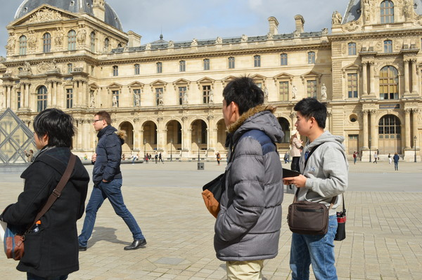
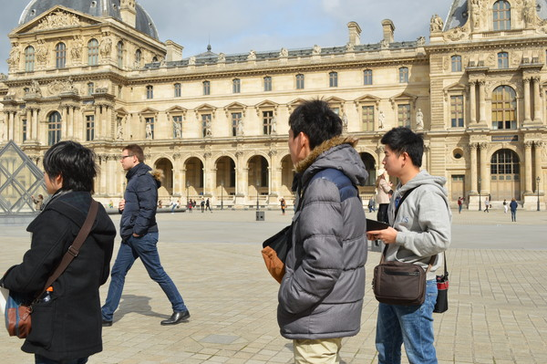

こんにちは東田です．3/2-4にインタラクション2017に参加してきました．
来たぜ明治大学中野キャンパス！大学でっかい．
ホールもすごい．前の椅子に着いた机と座椅子．大きめでなのがうれしい……とても便利……
今回は一日目，二日目の正午までは口頭発表とインタラクション展示を見て回り，後はクロージングまで展示の設営と実際の展示を行っていました．
三日目の設営時に素敵に無敵に寝坊したメンバーばかりで肝が冷えたりもしましたが，
備忘録代わりにつらつら書き綴ります．
オープニング
来場者数の話や避難経路，設計の話でした．
来場者は600人を超え，まだまだ増えるとのこと．白井先生のお話によるとVR学会で200人程度だそうなので，この数はかなり大きいのですかね．
実は学会が参加なのでいまいち掴めていなかったりします．
プログラムについて
全体の進行や査読プロセス，賞の話．
採否判定会議に８時間．どんな話し合いをするのかが気になりますね．
ベストペーパー賞
上位二本で投票→決選投票でも半数に割れる
＞＞どういうことなの＜＜
ということで二件のベストペーパー賞だそうな．
・モバイルカメラを用いたデバイス間アドホックアプリケーション共有（東北大）
新たな分野に寄与し今後に期待できるため
・連結した直線経路をステアリングする動作の分析とモデル化（明治大）
実験や分析を丁寧に行っており完成度が高いため
そしてここでインタラクティブ発表についてのアナウンス．厳密な査読はないがスクリーニングは行ったとのこと．
Memo：スクリーニング…和訳して適性審査，ふるい分け等．今回は後者の意味合いでしょうか．
その中でも星マークの付いたプレミアム発表は特に優れた発表のようです．やったぜ．
ところで，プログラムを見ていて気になったこと．
座長ってなんだ？
先生「タイムキーパーしたり質問がないときに質問をしたり，色々やる進行役みたいな人です」
なるほど．
モバイルカメラを用いたデバイス間アドホックアプリケーション共有
一つの仕事を複数のデバイスにまたがって行うこともある昨今でも，アドホック情報共有（定義：近距離・即時性・容易な接続）における最適な方法があまり検討されていないことを問題点としてあげていました．
ファイル転送・アプリケーション依存・複雑なシステム等，導入の際の問題点を指摘した上で制作したアプリケーション「CamCutter」の紹介．
一言で説明すると，カメラでアプリケーションの写っている画面を撮影するだけで，撮影した側の端末でアプリケーションを使用することができる共有ツールですかね．
デスクトップ画面を転送しているわけではなく，アプリケーションの画面を転送しているようです．
そしていきなり実際に使ってのプレゼンテーションを始める．つよい．
主要となる技術はアプリケーションの認識，アプリケーションの共有，入力の共有ですね．通信はTCPのようです．
マルチホストシステムなので，ホストが複数でも利用できる．すごい．
取ってきた画面をまた別の端末へ映してあげられる．つよい．
普及したら現在のリモートよりもライトにクラウドの共有ができそうだな，と思いました．ただ，複数人でやるとまた違った感想が出そうです．ﾊｯこれがあるとお風呂に入りながらPCで描いていた絵の続きをかけますね…！！！
写真ライフログにおける検索クエリを用いた想起補助
写真の前後で考えていたこと出来事を検索履歴を通じて想起させるようにします．
関連研究ではがっつりとセンサをたくさん付けていましたが，それをユーザーの負担が少なくさせ，かつ感情や興味を想起可能にしているとのこと．ほむほむ．
なるほどと思ったのは，
検索クエリはその日全体の出来事を思い出しやすい．
アンケートより．想起する思い出の重要さに違いはない
という二点です．二言目結構かっこいいこと言っている感じありますね．でも思い出ってそういうものかも．また，壇上でも言及されていましたが，若い方はSNSでの投稿で思い出せるからいらないかな？とは思いました．社会性フィルタをかけていたSNSの投稿だけでは忘れていたものを，検索クエリで思い出したくないことも思い出しちゃうかも．うひゃあ．
連結した直線経路をステアリングする動作の分析とモデル化
ステアリングの法則，という未知ワードです．ググる前に丁寧な解説．おお，有り難い．
ステアリング：幅が規定された経路を通過する動作．
メニュー画面等，どんな入力デバイスでも利用される法則．その経路に曲がり角がある場合は角をポインティングする操作が加わったり，幅Wが広すぎる場合は全長Aのみに依存するようになったりと，幾つかの公式に分かれているそうな．
これめっちゃ面白そう．いい単語を知った．
ディスレクシア障害を抱えた人が手軽に使用できるオンライン動画字幕読み上げシステムの検討
LDの一種，識字障害の方向けのシステム．
YoutubePlayerAPIとWebSpeechAPIを用いているそうです．
作業中に字幕の有る動画を見たい場合は健常者にとっても有用かもしれないですね．
私は逆に他人の話す言葉をうまく認識ができず（聴覚的な問題ではなく，認識の問題ですね），文章を読むことでやっと理解出来る人間なので，問題を抱いている事自体は全く逆の方向なのかもしれません．ですが，そういった人間が居る，ということを知ってもらう方向へ今しばらくは力を費やすべきなのかもしれないなあ，と質疑中に思っていました.
折角なので使ってみました．
動画内での字幕の，文と文の切れ目（～～ます，でしょう等）と次の文の頭の間が開かないのでちょっとわかりづらいかな，という印象を受けました．
ロボットのNon－Duchenne Smileによる人との社会的結合の強化
人と関わるロボットの多くはモノとして扱われる．ロボットが社会で担う役割を増やすためには？という問い．
現状ではプレゼンターロボット等，常に社会的な振る舞いを行うロボットと，
会話ロボット等，常に感情的な振る舞いを行うロボットに分かれるが，
人間は分かれていないという点に着目し，ロボットにもこの違いを入れたらより人間との距離が縮まるのでは？という発端で始まったそうな．
注目したいのは「髪型が似合ってますね」「似合っていませんね」
と言われた時のミナミちゃんが示した表情だと思います．
たしかに人間っぽい．
ロボットからの抱き返しは向社会的行動と相互作用を促進するか？
人とロボットの相互的抱擁…いい歳してキグルミを見ると抱きつきに行く人間には色々刺さるものが有りますね！
そして実験映像を見ていて気づく．そ，そのぬいぐるみ…私のベッドに居ます…（実話）
人目が有るとハグしにくい…ううん分かる気がする…（めそらし）
行動には差が見られたが印象には差がないというのは意外．
でもハグしてくれるロボットあったら買っちゃいそうな気がします．
最近は腕付き抱きまくらがありますが，能動的とはいい難いので…
みんな疲れてるんだよ…そりゃフリーハグはやるわ…でも恥ずかしがり屋なのでトライできない．
二日目
結露を用いたインタラクティブディスプレイの濃淡制御方法
実体ディスプレイ：苔や水などの実態を有する素材からピクセルを構成し情報提示するもの
結露を用いたメリットは触れることが出来る点と濃淡の制御とのこと．
中学以来でしょうか，久しぶりに露点やら飽和水蒸気量等という言葉を耳にして若干意識が遠くなりかけました．（←苦手）
実際の展示例があれば見たかったなあと思います．
積み木遊び認識のためのスマートウォッチを活用した積み木型インターフェース
新しい積み木の提案といったところでしょうか．内蔵の加速度センサで動きを，積み上げや指との接触をタッチスクリーンで検知するようです．質疑でもおっしゃっている方が居ましたが，子供の玩具を考える場合は安全性と量産時のコストを考える必要があるなと思いました．
インタラクティブ展示
植物をモチーフとしたアクチュエーティングディスプレイにおける効率性を考慮した表現手法
シンプルな構造の動く草です．普通，植物の動きを用いた制作では草の一本一本に針金を入れたりモーターを入れたりするそうですが，草束にテグスを巻き，それをモーターで動かすことにより少ない工数で表現出来るとのこと．ちなみに，三角形の台座は繋げられるそうです．目一杯つなげたさがある…電源は台座をつなげた際にカイロがつながるそうですが，最大いくらほど並べられるのでしょうか．
食べられる再帰性反射材の提案と試作
よく自転車についているような反射材を，食べられる素材で作ったというお話です．
実際に食べてきました！！
表面は自転車のアレと同じような感じ．キラキラしてて綺麗です．これはこれで利用できそう．
味の方はほんのり甘いです．寒天と砂糖でできているとのことで，
砂糖の配合率を変化させることで屈折率を変化させられるとのこと．
流動床インタフェース：液体のようにふるまう砂を用いたインタラクションシステム
一見粒の細かい砂を敷き詰めたケースですが，スイッチを入れた途端まるで水のような振る舞いをするようになるという摩訶不思議なものでした．砂特有の，拳を入れてもぼすっと吸収される感触が，スイッチを入れた瞬間水に入れたように吸い込まれる事にゾワゾワしました．
原理としては，ケースの底面に小さな穴のたくさん空いた板が有り，そこから空気を吹き出しているそうです．よくみると物体と砂の境目は沸騰した水のようにぶくぶくと泡立っていたりします．
発表を見てて思ったこと
説明のために入れる図はしっかり作り込まれるとよりわかりやすく成るかなと思いました．
平面よりは少しパースをつけるなりして気を配るべきなのでしょうね．
（勿論話術の方もあるでしょうが…）
また，関連研究の下に現段階でのデメリットを併記してから次のスライドに移ると自研究のメリットがわかりやすいと思いました．あ，実験の様子を撮影したビデオを並列に表示しているのも違いがわかりやすい．
極論，スピークと図だけでも会話能力が高ければ用いれば文字がない発表でも平気かも知れないというのも感じました．
ということで３日間の学会参加でした．
そして現在は埼玉です．そうです明日も展示です
場所が場所だけに，客層の違いや反応に着目していきたいと思っています！
ではでは！


 



{kind=link}
{kind=link}
{kind=link}